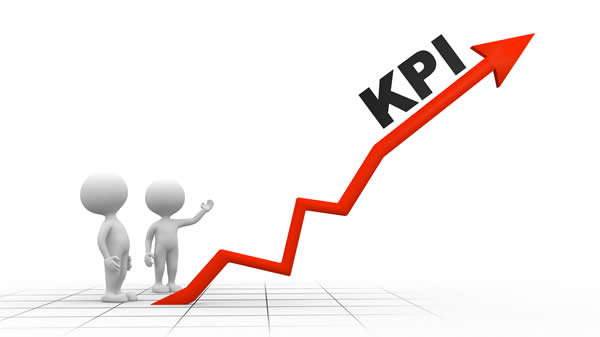
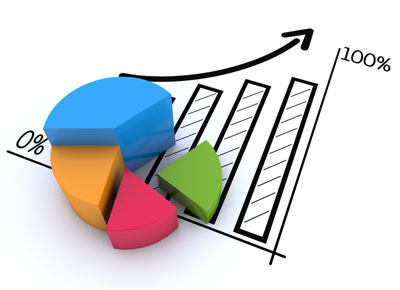
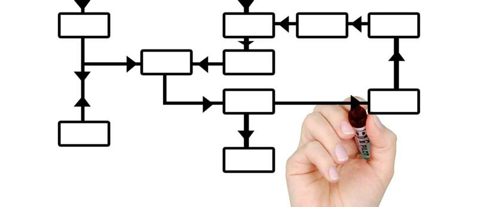
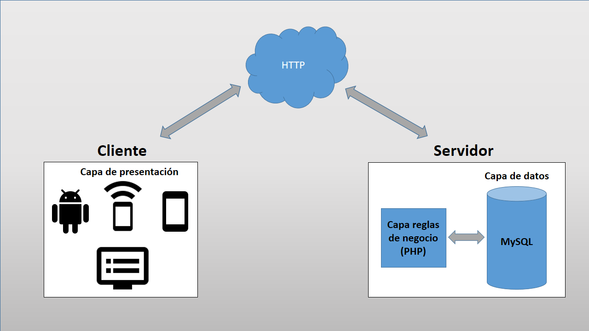
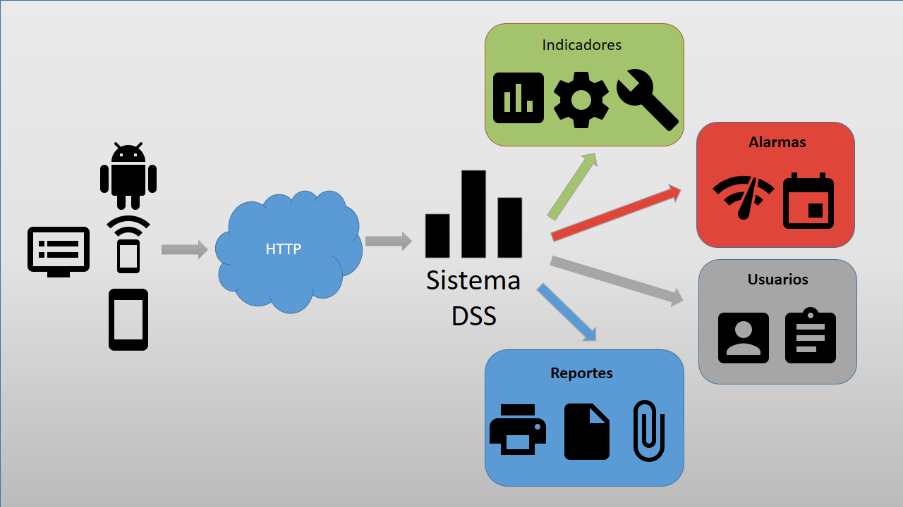
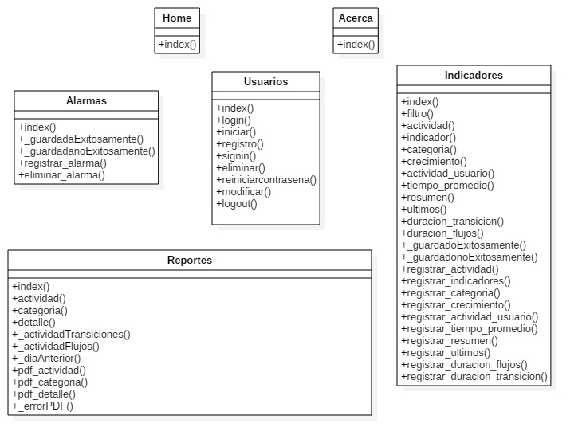
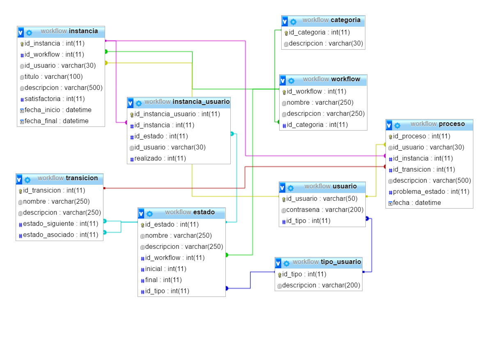
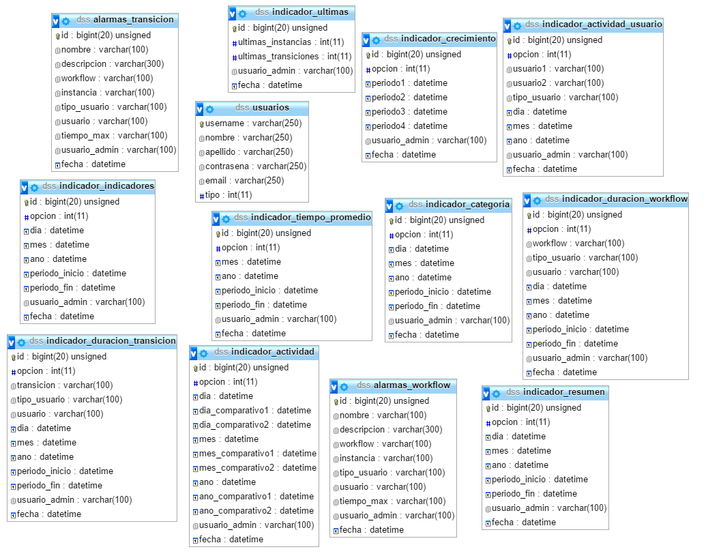
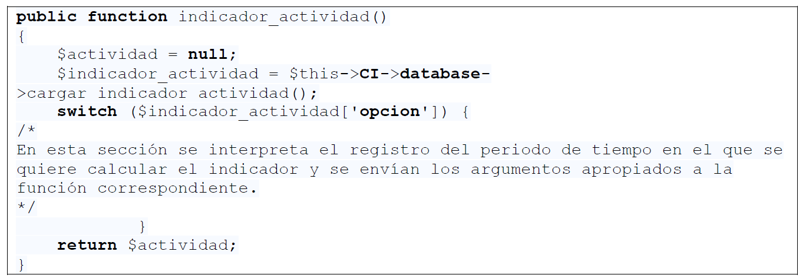

- PHP 5.6
- Codeigniter
- AmCharts
REPÚBLICA BOLIVARIANA DE VENEZUELA
UNIVERSIDAD DEL ZULIA
FACULTAD EXPERIMENTAL DE CIENCIAS
DIVISIÓN DE PROGRAMAS ESPECIALES
LICENCIATURA EN COMPUTACIÓN
HERRAMIENTA DE SOPORTE A DECISIONES PARA UN SISTEMA DE CONTROL DE FLUJOS DE TRABAJO
Trabajo especial de grado presentado como requisito para optar al título de Licenciado en Computación
Autor: Br. Jefferson Lizarzabal Rodriguez
Tutor: MSc. Gerardo Pirela
Co-tutor: Licdo. Sigerist Rodríguez
Maracaibo, junio de 2017
Planteamiento del problema

Objetivos de la investigación
Objetivo general
Desarrollar una herramienta de soporte a decisiones para un sistema de control de flujos de trabajo.
Objetivos específicos
¤ Realizar una investigación documental sobre los sistemas de soporte a decisiones y control de flujos de trabajo.
¤ Seleccionar las características del sistema de control de flujos de trabajo que conformarán los indicadores de gestión.
¤ Diseñar la estructura de clases y repositorio de datos del sistema de soporte a decisiones.
¤ Construir un módulo de reportes adaptativos de indicadores de gestión.
¤ Integrar el sistema de soporte a decisiones al sistema de control de flujos de trabajo.
¤ Realizar pruebas funcionales del sistema final.
Justificación


Antecedentes de la investigación
| Título | Aporte | Deficiencia | Referencia |
|---|---|---|---|
¤ Sistema Web para el Control de Flujo de trabajo |
Base del proyecto. Se obtuvieron estructuras funcionales para el almacenamiento y ejecución de flujos de trabajo. |
Carece de un modulo de visualización de indicadores. No es posible determinar el desempeño de los procesos. |
Moya (2014) |
¤ Motor de Ejecución de Flujos de Trabajo en una Arquitectura Orientada a Servicios Utilizando Software Libre |
Motor capaz de ejecutar instrucciones implementadas dentro de un manejador de base de datos. Interactua como un servicio web. |
No posee una interfaz para analizar los elementos que intervienen en los procesos. Falta de herramientas para mejorar decisiones estratégicas. |
Escobar (2011) |
¤ Herramienta Web Mining para la Toma de Decisiones en el uso de Estrategias de Promoción de Servicios |
Herramienta de tipo gerencial usando mineria de datos de forma planificada y sistemática. |
Basada en el ámbito económico. Sus funciones están basadas en métodos propios del sector. |
Muñoz (2008) |
Bases teóricas
¤ Toma de decisiones
La toma de decisiones es el núcleo de la planeación y se define como la selección de un curso de acción entre varias alternativas.
Koontz, Weihrich y Cannice (2012)

¤ Sistema de soporte a decisiones

Bases teóricas
¤ Sistema de soporte a decisiones
- Tipos de sistemas de soporte a decisiones
- Clasificación de los sistemas de soporte a decisiones
- Características de los sistemas de soporte a decisiones
- Componentes funcionales que integran un sistema de soporte a decisiones
Bases teóricas
¤ Indicadores de gestión


- Repuesta
- Crecimiento
- Rendimiento
- Eficacia
Bases teóricas
¤ The Workflow Management Coalition (WfMC)
Es un grupo de empresas o compañías, unidas bajo el propósito de crear estándares de desarrollo bajo el uso de Workflows.
Hollingsworth (1995)
¤ Flujos de Trabajo (Worklflow)

Herramientas utilizadas
Desarrollo PHP y Javascript
Base de datos
- MySQL
- PHPMyAdmin
Capas del sistema

Arquitectura de la herramienta

Diagrama de clases

Diagrama de base de datos

Diagrama de base de datos - sistema de control de flujos. Fuente: Moya (2014)
Diagrama de base de datos

Diagrama de base de datos - sistema DSS. Fuente: Lizarzabal (2017)
Implementación de los indicadores

Código fuente indicador actividad. Fuente: Lizarzabal (2017)
Demostración del sistema
SISTEMA DSS
¡ G R A C I A S !